Analyser, chiffrer et financer une opération de marchand de biens en OccitanieÉdition de novembre 2026
Sommaire
Le guide en un coup d'œil
Bienvenue dans MADRIMMO
03
Installer l'appli sur téléphone et PC
04
1 · Rechercher un bien
05
2 · Nature du bien et prix
06
3-4 · Marché, ventes DVF et biens similaires
07
5 · Travaux : décrire et chiffrer vite
08
5 · Travaux : pièces et devis détaillé
09
5 · Travaux : lots, TVA et démarches
10
6 · BP et négociation
11
7 · Financement
12
8 · Coûts techniques, frais de vente, profil
13
9 · Résidence principale et comparatif
14
10 · Récapitulatif et dossier PDF
15
11 · Projets enregistrés
16
Claude et les photos d'annonce
17
Règles de calcul et FAQ
18
Exemple suivi dans ce guideUn T3 de 65 m² au 12 rue de la Loge à Montpellier, affiché 210 000 €, négocié 145 000 €, à rafraîchir avec cuisine et salle de bain à refaire, revendu 240 000 €. Les chiffres des captures sont ceux calculés par l'appli.
MADRIMMO · Guide02
Bienvenue
Une seule appli, de l'annonce au dossier bancaire
MADRIMMO interroge en direct les données publiques (cadastre, plan local d'urbanisme, ventes réelles DVF, Géorisques, diagnostics de performance énergétique), chiffre les travaux, calcule le bilan prévisionnel au format marchand de biens et produit un dossier PDF pour la banque ou les investisseurs.
En haut des onglets de calcul : prix d'achat modifiable, marge, bénéfice, net associés, financement. Il suit chaque modification.
Tout se recalcule
Changer un prix, une surface ou un forfait met à jour tous les onglets en direct, sans bouton « calculer ».
Occitanie
Les 13 départements de la région : 09, 11, 12, 30, 31, 32, 34, 46, 48, 65, 66, 81, 82.
MADRIMMO · Guide03
Avant de commencer
Installer l'appli
Sur téléphone
iPhone (Safari) : ouvrir l'adresse de l'appli, toucher Partager ⬆, puis « Sur l'écran d'accueil » et « Ajouter ».
Android (Chrome) : menu ⋮, puis « Installer l'application » ou « Ajouter à l'écran d'accueil ».
L'icône au monogramme apparaît sur l'écran d'accueil ; l'appli s'ouvre en plein écran, sur fond noir.
Sur ordinateur
Ouvrir l'adresse dans le navigateur. À partir d'un écran large, les 14 étapes s'affichent dans un menu à gauche et le contenu occupe toute la largeur.
Bon à savoirUne connexion internet est nécessaire : les données publiques sont chargées en direct. Les projets enregistrés restent dans le navigateur de l'appareil utilisé.
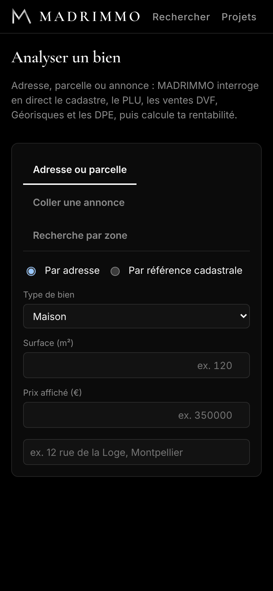
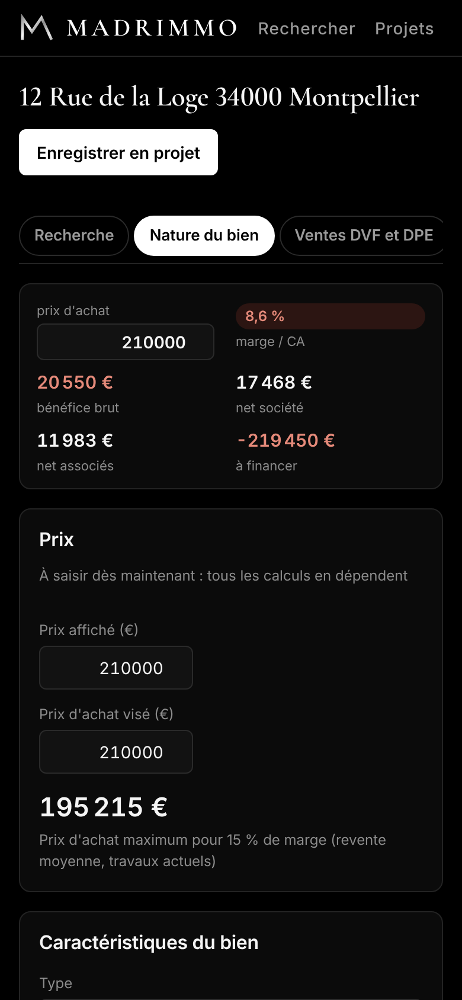
MADRIMMO · Guide04
Étape 1
Rechercher un bien
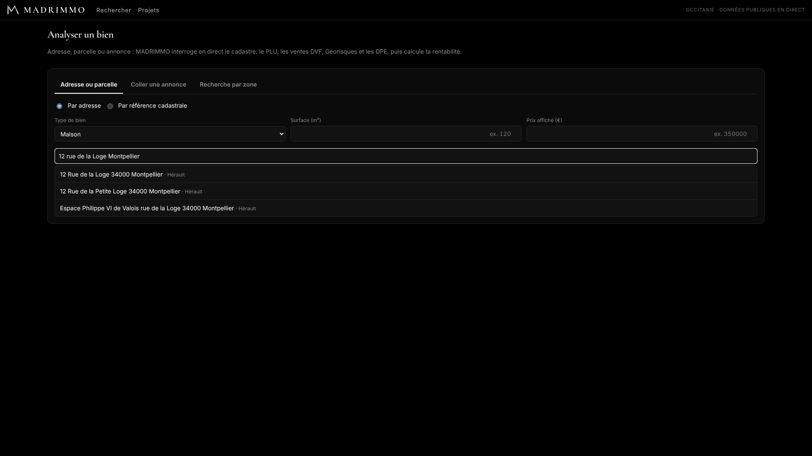
Adresse ou parcelle
Choisir le type de bien, la surface et le prix affiché, puis taper l'adresse et sélectionner une suggestion. Ou passer en « Par référence cadastrale » (commune, section, numéro).
Envoyer une annonce (le plus fiable)
Installer une fois le favori Envoyer à MADRIMMO (menu Importer). Sur une annonce Leboncoin, SeLoger, Bien'ici, PAP ou d'agence, toucher le favori : l'annonce est lue dans le navigateur (prix, surface, DPE, ville, position, photos) et s'ouvre dans une fiche à vérifier. Sur Android : Partager → MADRIMMO depuis l'appli.
Coller un lien ou un texte
Bien'ici, PAP et les sites d'agences se lisent depuis le lien. Leboncoin et SeLoger bloquent cette lecture : l'appli guide alors vers le favori. Un texte collé est analysé et les mots-clés de travaux pré-remplissent l'onglet Travaux.
Capture d'écran d'annonce
Dans « Coller une annonce », importer une capture : le texte est lu directement sur l'appareil (aucun envoi sur internet), puis analysé comme une annonce collée.
Recherche par zone
Choisir une commune d'Occitanie pour voir les prix au m² et les dernières ventes, puis ouvrir l'une d'elles en analyse.
MADRIMMO · Guide05
Étape 2
Nature du bien et prix
Le bloc Prix, en premier
Prix affiché et prix d'achat visé : tous les calculs en dépendent. Le prix d'achat maximum pour la marge cible (15 % par défaut) s'affiche à côté. Le prix d'achat se modifie aussi dans le bandeau, depuis n'importe quel onglet de calcul.
Caractéristiques
Type, surface, terrain, pièces, étage, ascenseur, DPE, état. Les notes de visite se tapent ou se dictent (bouton micro).
Données publiques
Cadastre : parcelle, identifiant, contenance, plan. Urbanisme : zone du PLU, règlement en PDF et lien Géoportail. Risques : argiles, inondation, séisme… et lien Géorisques.
AstuceUne zone « patrimoniale » (SPR, PSMV) signale que les travaux extérieurs passent par l'Architecte des Bâtiments de France : l'onglet Travaux le rappelle dans les démarches.
MADRIMMO · Guide06
Étapes 3 et 4
Le marché réel du quartier
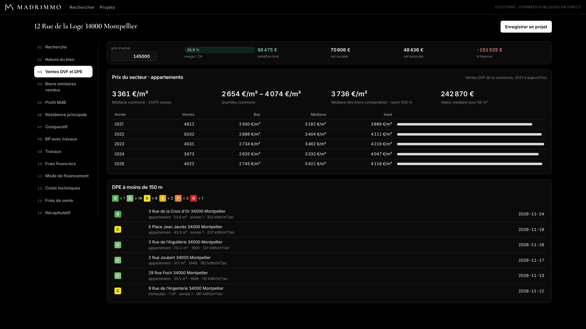
Ventes DVF et DPE
Prix au m² de la commune depuis 2021, par année (quartiles et médiane), et diagnostics énergétiques des logements voisins dans un rayon de 150 m.
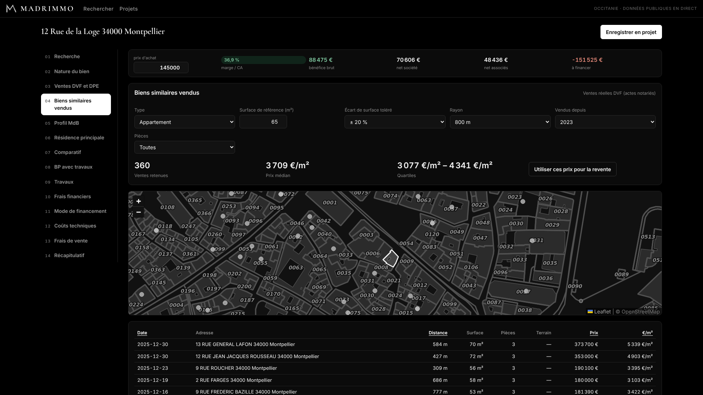
Biens similaires vendus
Les ventes notariées autour du bien, sur une carte et en tableau, filtrables par type (dont garages et parkings), surface, rayon, période et pièces.
Prix de revente« Utiliser ces prix pour la revente » remplit les lots du BP : prix bas = les ventes les moins chères du secteur (quart inférieur), prix haut = les plus chères (quart supérieur). Dans le BP, chaque lot est ensuite estimé selon sa nature (appartement, local commercial, garage…).
MADRIMMO · Guide07
Étape 9 · Travaux (1/3)
Décrire le bien, chiffrer en un clic
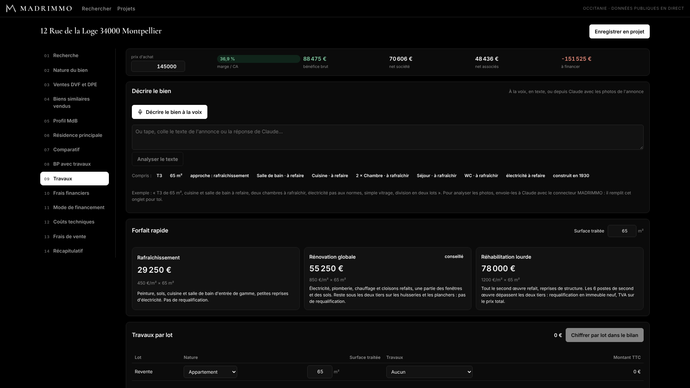
À la voix, en texte ou avec Claude
Décrire le bien à la voix : parler naturellement, par exemple « T3 de 65 m², cuisine et salle de bain à refaire, deux chambres à rafraîchir, électricité pas aux normes, simple vitrage ». L'appli affiche ce qu'elle a compris et remplit les pièces.
Ou taper, coller le texte de l'annonce, puis Analyser le texte.
Ou envoyer les photos de l'annonce à Claude (page 17).
Forfait rapide au m²
Rafraîchissement
450 €/m²
Rénovation globale
850 €/m²
Réhabilitation lourde
1 200 €/m²
Un clic sur une carte reporte le forfait dans le bilan. La mention « conseillé » s'appuie sur l'état des pièces.
MADRIMMO · Guide08
Étape 9 · Travaux (2/3)
Pièces et devis détaillé
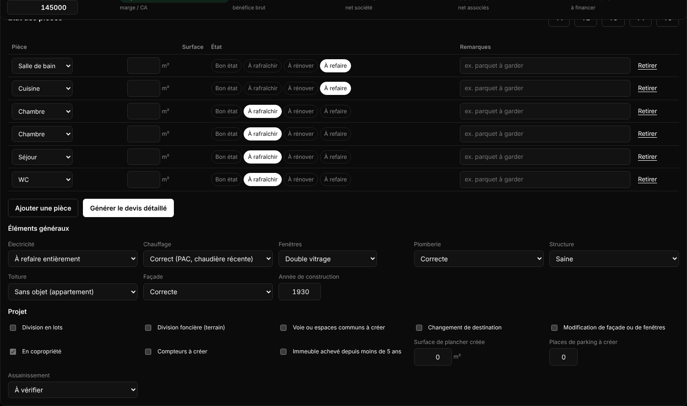
État des pièces
Une ligne par pièce : type, surface (vide = répartie automatiquement), état bon, à rafraîchir, à rénover, à refaire. Les boutons T1 à T5 créent les pièces d'une typologie. Compléter les éléments généraux (électricité, chauffage, fenêtres, plomberie, structure, toiture, façade, année) et les options du projet (division, changement de destination, surface créée, parking, copropriété…).
Générer le devis détaillé
Le devis est construit lot par lot avec les grilles de prix (entrée, milieu ou haut de gamme). Quantités modifiables, lots ajoutables. Il remplace le budget travaux du bilan ; géomètre, architecte, avocat et huissier vont dans les coûts techniques, l'assurance dommages-ouvrage dans les frais.
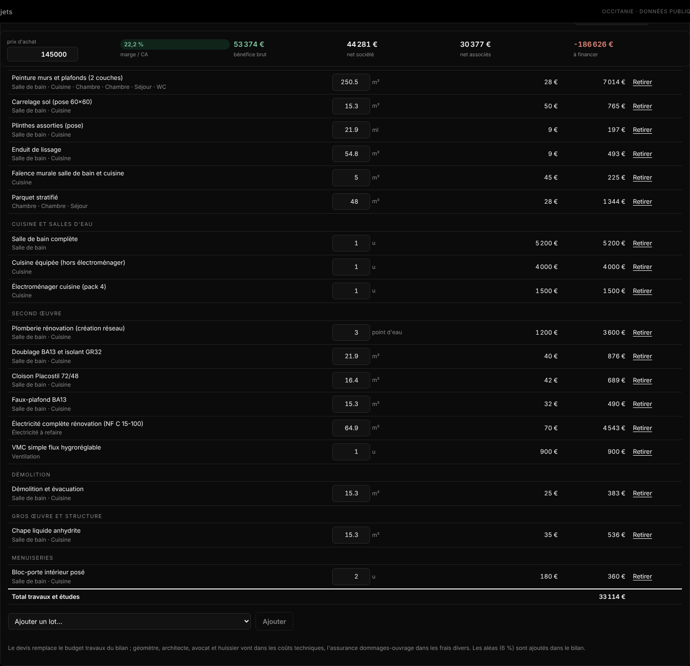
MADRIMMO · Guide09
Étape 9 · Travaux (3/3)
Lots, TVA et démarches
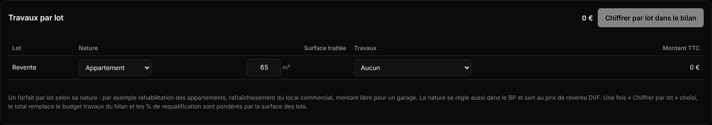
Travaux par lot : pour un immeuble découpé, chaque lot revendu a sa nature, sa surface traitée et son forfait (ou un montant libre). Chiffrer par lot dans le bilan remplace le budget travaux par le total.
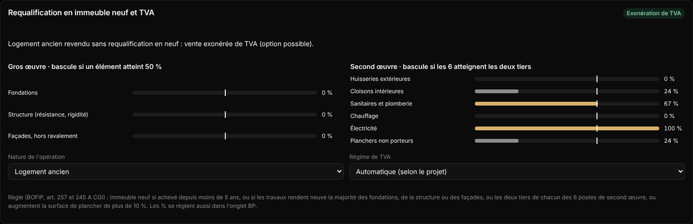
Requalification en immeuble neuf
Une barre par élément : bascule si un élément de gros œuvre atteint 50 %, si les 6 postes de second œuvre atteignent les deux tiers, si la surface augmente de plus de 10 % ou si l'immeuble a moins de 5 ans. Le régime de TVA « automatique » en découle.
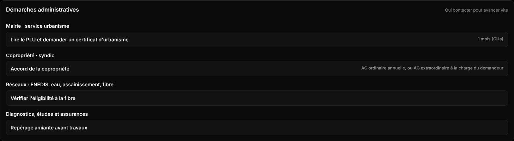
Démarches administratives
Qui contacter et dans quel délai : mairie (PLU, DP, permis), ABF, géomètre et notaire, syndic, réseaux, diagnostics et assurances. Les démarches « avant le compromis » sont signalées, avec la clause suspensive à prévoir.
MADRIMMO · Guide10
Étape 8
BP avec travaux et négociation
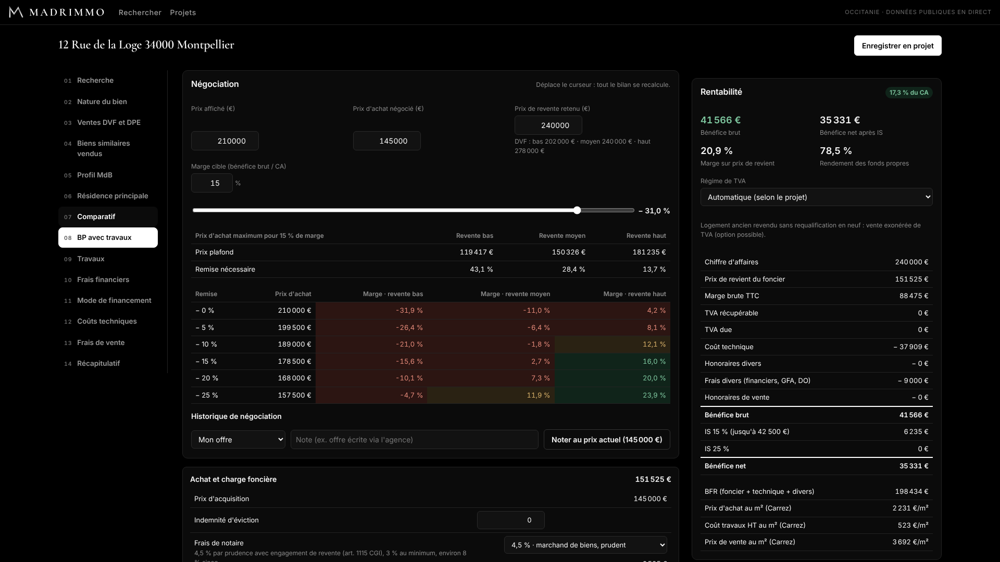
Négocier avec le plafond sous les yeux
Le curseur de remise fait varier le prix d'achat et tout le bilan. Le tableau donne le prix d'achat maximum pour la marge cible, selon une revente basse, moyenne ou haute, et la marge obtenue à chaque niveau de remise. L'historique garde la trace des offres et contre-offres.
Le bilan, au format de l'Excel
Achat et frais de notaire (4,5 % par défaut, 3 % au minimum, 8 % sans engagement de revente), budget travaux par poste avec TVA et % rénové, recettes par lot, TVA à la revente, impôt sur les sociétés.
Les lots revendus
Chaque lot a une nature : appartement, maison, local commercial, garage, parking, terrain. Son prix bas et haut est estimé avec les ventes DVF de même nature, au m² ou à l'unité pour un garage. Il suit les changements de nature ou de surface, sauf si un prix a été saisi à la main.
Prix retenuLa colonne « Prix retenu » permet d'imposer un prix de revente ; le scénario passe alors en « saisi ».
MADRIMMO · Guide11
Étapes 10 et 11
Financement
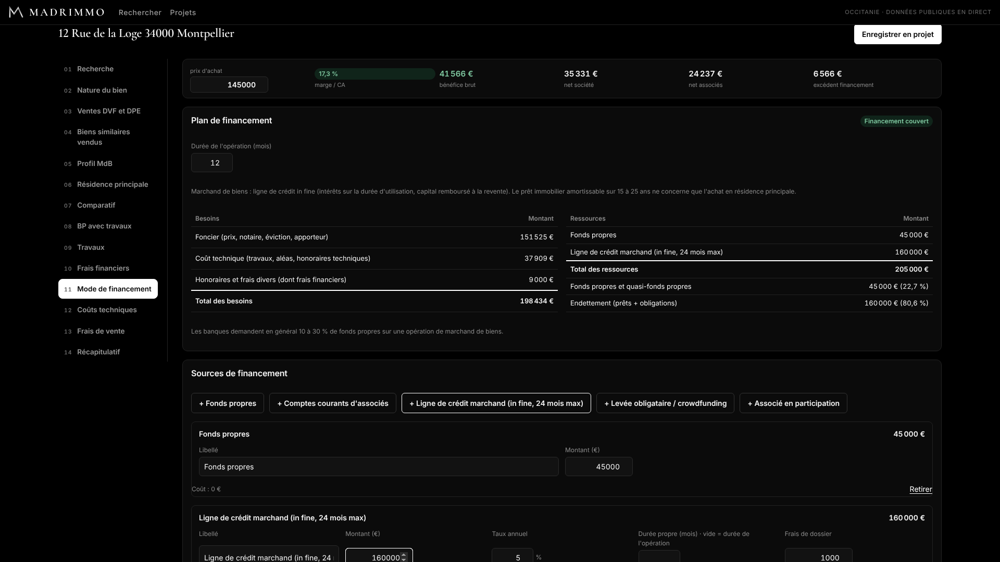
Besoins et ressources
Le plan compare les besoins (foncier, coût technique, frais) aux ressources. Ajouter les sources avec les boutons : fonds propres, comptes courants d'associés, ligne de crédit marchand (in fine, 24 mois maximum), levée obligataire ou crowdfunding, associé en participation.
Coût de chaque source
Taux, durée, frais de dossier, garantie, commission, frais de plateforme, part de bénéfice : le coût total s'ajoute aux frais financiers du bilan. Une alerte s'affiche si l'opération dépasse 24 mois avec une ligne de crédit.
AstuceUne nouvelle source se pré-remplit avec le montant qui manque.
MADRIMMO · Guide12
Étapes 5, 12 et 13
Coûts, frais de vente et profil
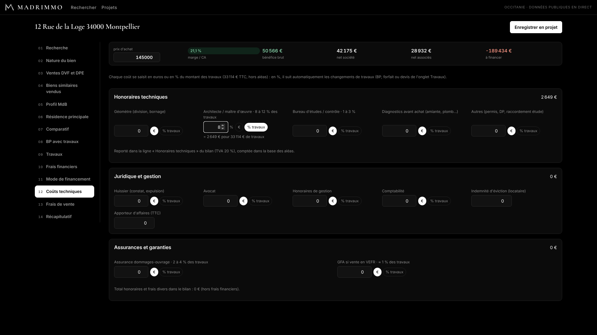
Coûts techniques
Géomètre, architecte, bureau d'études, diagnostics, avocat, huissier, gestion, comptabilité, dommages-ouvrage, GFA : chacun en € ou en % des travaux. En %, le montant suit automatiquement les changements de travaux.
Frais de vente
Honoraires d'agence en montant ou en % du prix de vente, diagnostics, mainlevée, home staging, autres frais.
Profil MdB
SAS ou SARL, capital, régime de TVA, frais de notaire et mode de sortie du bénéfice (dividendes au PFU de 31,4 %, cotisations en SARL) : le net pour les associés en découle.
MADRIMMO · Guide13
Étapes 6 et 7
Résidence principale ou société ?
Banque et fonds propres
Le même bien acheté en nom propre, habité puis revendu, plus-value exonérée. Saisir l'apport, la durée du prêt immobilier (15, 20 ou 25 ans), le taux, l'assurance, la garantie et la durée de détention. L'appli calcule la mensualité, le revenu minimum du foyer (35 % d'endettement), le capital restant dû à la revente et les indemnités de remboursement anticipé.
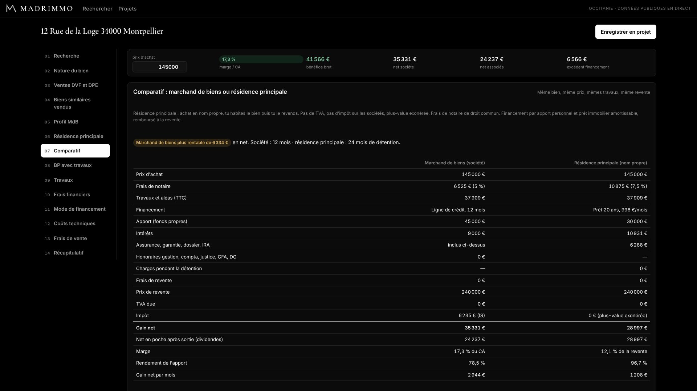
Comparatif
Côte à côte : frais, financement (ligne de crédit contre prêt amortissable), TVA, impôts, gain net, marge et rendement de l'apport.
MADRIMMO · Guide14
Étape 14
Récapitulatif et dossier PDF
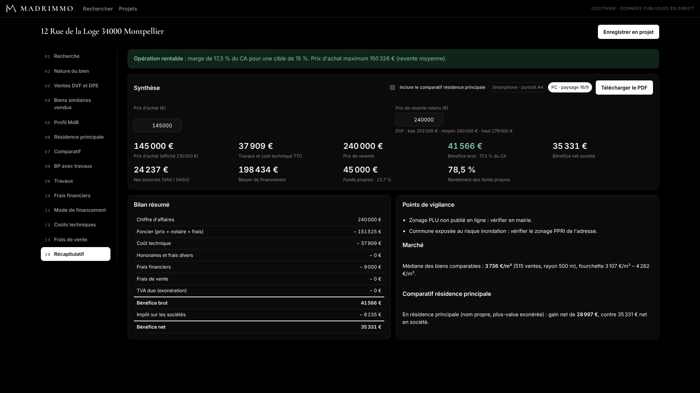
Synthèse et points de vigilance
Verdict de rentabilité, chiffres clés, bilan résumé et points de vigilance (urbanisme, risques, DPE, financement, démarches à mener avant le compromis).
Télécharger le PDF
Choisir le format : Smartphone · portrait A4 (lecture sur téléphone, impression, banque) ou PC · paysage 16/9 (écran, présentation aux investisseurs). Cocher l'option pour ajouter le comparatif résidence principale.
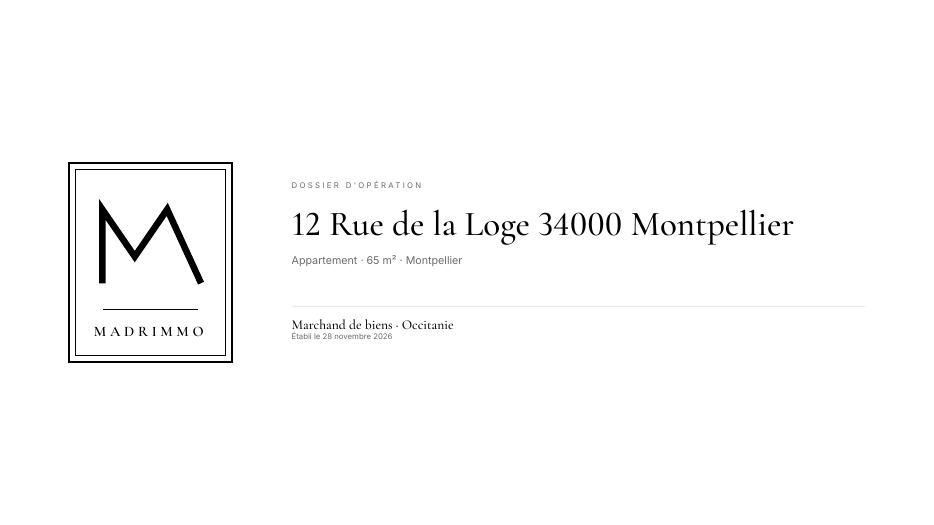
MADRIMMO · Guide15
Suivi
Projets enregistrés
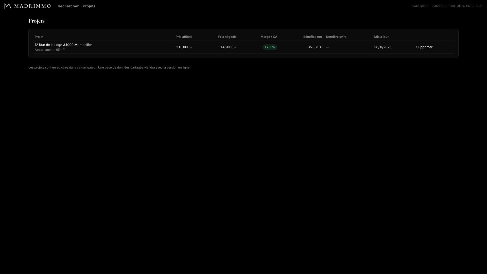
Enregistrer et reprendre
Enregistrer en projet, en haut de chaque analyse, sauvegarde tout : prix, travaux, lots, financement, offres. Le menu « Projets » liste les analyses ; un clic les rouvre dans l'état où elles ont été laissées.
Sur quel appareil ?
Les projets sont stockés dans le navigateur de l'appareil utilisé : un projet enregistré sur l'ordinateur n'apparaît pas sur le téléphone, ni chez Maëva. Le PDF reste le moyen de partager une analyse.
MADRIMMO · Guide16
Avec Claude
Le connecteur Claude et les photos d'annonce
Claude (l'abonnement de chacun) peut utiliser les outils de MADRIMMO : rechercher une adresse, lire la fiche du bien, trouver les ventes comparables, calculer le bilan, négocier, comparer la résidence principale, monter le financement et proposer les travaux à partir des photos. L'appli n'embarque aucune IA payante.
Activer le connecteur (une fois)
Dans Vercel, projet MADRIMMO, Settings → Environment Variables : ajouter MADRIMMO_JETON (au moins 16 caractères, à garder secret), puis redéployer.
Dans Claude : Personnaliser → Connecteurs → Ajouter un connecteur personnalisé, avec l'adresse https://<adresse de l'appli>/api/mcp/<jeton>.
Chaque personne l'ajoute sur son propre compte Claude.
Exemples de demandes
« Analyse le 12 rue de la Loge à Montpellier, T3 de 65 m² affiché 210 000 €. »
« Voici les photos de l'annonce : propose une approche travaux. » Claude repère les pièces et leur état, puis renvoie un lien qui pré-remplit l'onglet Travaux.
« Quel prix d'achat maximum pour 15 % de marge ? »
« Compare avec un achat en résidence principale, 30 000 € d'apport sur 25 ans. »
MADRIMMO · Guide17
Référence
Règles de calcul et FAQ
Hypothèses par défaut (modifiables)
Frais de notaire marchand de biens
4,5 %
Aléas sur travaux
6 %
Marge cible (bénéfice brut / CA)
15 %
Impôt sur les sociétés
15 % puis 25 %
Dividendes (PFU 2026)
31,4 %
TVA à la revente
automatique
Notaire résidence principale
7,5 %
Prêt résidence principale
20 ans, 3,4 %
Endettement maximum
35 %
TVA automatique : exonération pour un logement ancien, TVA sur la marge pour un terrain à bâtir ou une division foncière, TVA sur le prix total si les travaux requalifient l'immeuble en neuf.
Questions fréquentes
La dictée ne marche pas. Autoriser le micro pour le site dans le navigateur. Sinon, utiliser le micro du clavier du téléphone dans le champ de texte.
Pas de ventes comparables. Élargir le rayon, la période ou l'écart de surface dans « Biens similaires ». Les données DVF couvrent 2021 à aujourd'hui.
Un prix de revente a changé tout seul. Les lots en automatique suivent leur nature et leur surface ; saisir un prix bas ou haut à la main le fige.
Un bien hors Occitanie. L'appli est limitée à la région.
Les chiffres font foi ? Non : c'est une aide à la décision. Fiscalité et TVA sont à valider avec l'expert-comptable, l'urbanisme avec la mairie.
MADRIMMO · Guide18
Acheter juste. Rénover bien. Revendre clair.Marchand de biens · Occitanie